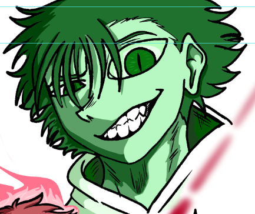

Zak Rodrigues é um jovem dotado de uma habilidade extraordinária e única. De suas pontas dos dedos, ele é capaz de disparar um raio de energia especial. Quando esse raio atinge qualquer objeto, o item sofre uma transformação imediata, tornando-se uma poderosa arma. Um simples lápis pode virar uma adaga afiada, enquanto uma barra de metal pode se transformar em uma espada ou até mesmo em um canhão tecnológico. Essa capacidade faz de Zak um combatente extremamente versátil, capaz de improvisar em qualquer situação.
Além de seus poderes impressionantes, Zak possui uma personalidade marcante. Ele é extremamente extrovertido, comunicativo e cheio de energia, sempre sendo o centro das atenções por onde passa. Seu jeito descontraído e brincalhão faz com que conquiste amigos com facilidade, mesmo em momentos de tensão. Zak adora fazer piadas, provocar seus companheiros de forma amigável e manter o clima leve, sem perder a determinação quando precisa agir. Sua personalidade lembra bastante a de Kaleb, da obra brasileira Sense Life, compartilhando o mesmo carisma, confiança e espírito aventureiro. Apesar de sua aparência despreocupada, Zak é muito leal aos seus amigos e está sempre disposto a protegê-los. Quando alguém que ele ama está em perigo, sua postura divertida dá lugar a um guerreiro corajoso e decidido.
| Habilidades | Efeito | Perigo |
|---|---|---|
| Deus do Arsenal | Transforma até 3 objetos em arma, caso o objeto já seja uma arma, ela irá ser aprimorada | Médio |
Com sua criatividade, seu senso de humor e seu incrível poder de transformar objetos em armas, Zak Rodrigues se destaca como um herói único, capaz de enfrentar desafios de maneiras inesperadas e surpreendentes.
Personagem usado como base:
Kaleb (Sense Life)